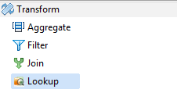
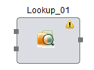

<!doctype html>
<html>
<head>
	<title></title>
</head>
<body></body>
</html>
<title></title>
<p><strong><span style="color:#FF0000;"></span></strong><span style="color:#FF0000;">Hydrograph Help</span></p>

<p><font face="verdana, geneva, sans-serif"><span style="font-size: 28px;">Lookup</span></font></p>

<p><span style="font-size:14px;"><span style="font-family:verdana,geneva,sans-serif;">Hydrograph Release Version 1.0</span></span></p>

<p><span style="font-family:verdana,geneva,sans-serif;"><span style="font-size: 14px;"><b>Lookup</b>&nbsp;component is a variant of Join which uses a small Lookup file to perform an in-memory join with a Base file. It is present under the Transform category in the component palette. This component performs a Left outer join by default. It contains strictly two input ports, one output port and one unused port.The lookup component matches the keys in the lookup file and base file and returns a value from the lookup file for every match in the output port.Un-matched records are transmitted through the unused port.</span></span></p>

<p><font face="verdana, geneva, sans-serif"><span style="font-size: 14px;">User is provided with a mapping view to select the input and output fields, pass them as passthrough or map-fields.</span></font></p>

<p><span style="font-family:verdana,geneva,sans-serif;"><span style="font-size: 14px;">The Lookup component can be easily distinguished in the component palette.</span></span></p>

<p></p>

<p><span style="font-family:verdana,geneva,sans-serif;"><span style="font-size: 14px;">An enlarged version of the same is depicted when dragged on the canvas.</span></span></p>

<p><span style="font-size:14px;"><span style="font-family:verdana,geneva,sans-serif;"></span></span></p>

<p><span style="font-size:14px;"><span style="font-family:verdana,geneva,sans-serif;">For further reference click on the links below:</span></span></p>

<ul>
	<li><span style="font-size:14px;"><span style="font-family:verdana,geneva,sans-serif;"><a href="Lookup_Properties.html">Properties</a></span></span></li>
	<li><span style="font-size:14px;"><span style="font-family:verdana,geneva,sans-serif;"><a href="Lookup_Mapping_View.html">Mapping View</a></span></span></li>
	<li><span style="font-size:14px;"><span style="font-family:verdana,geneva,sans-serif;"><a href="http://Validations">Validations</a></span></span></li>
</ul>
